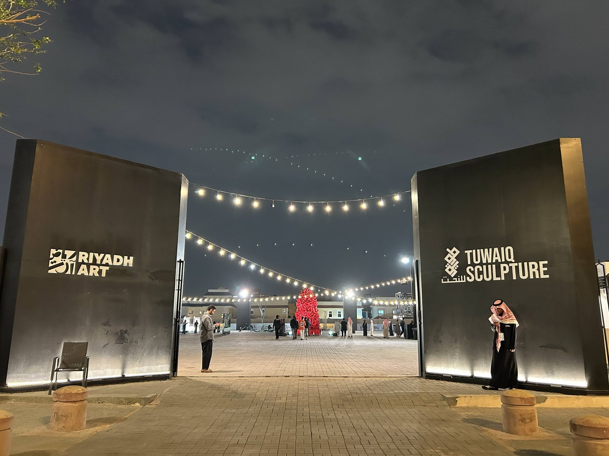
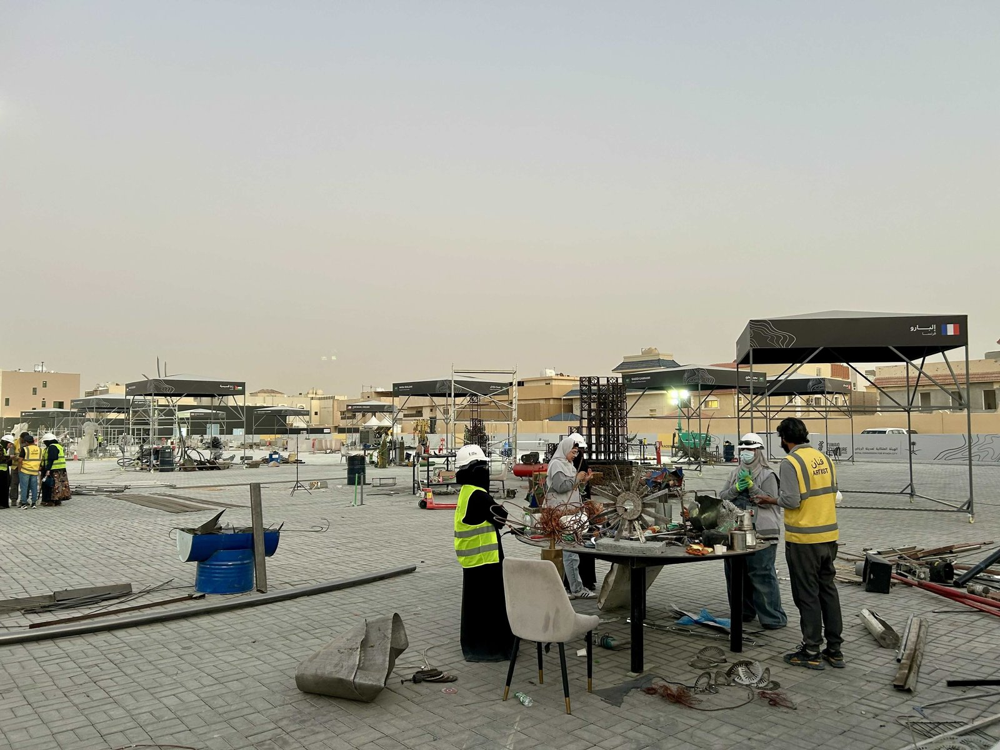
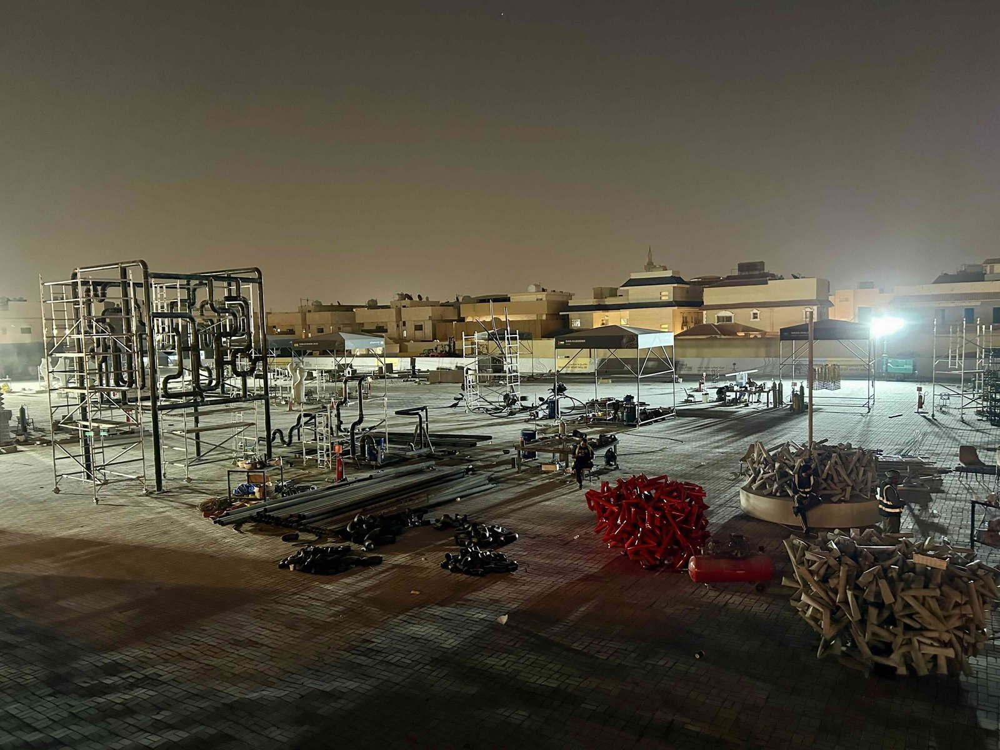
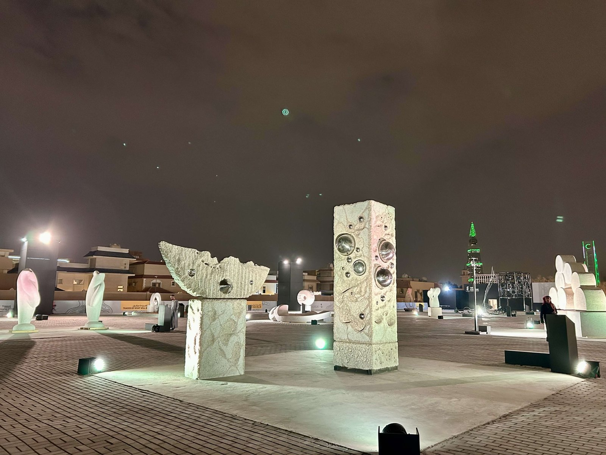
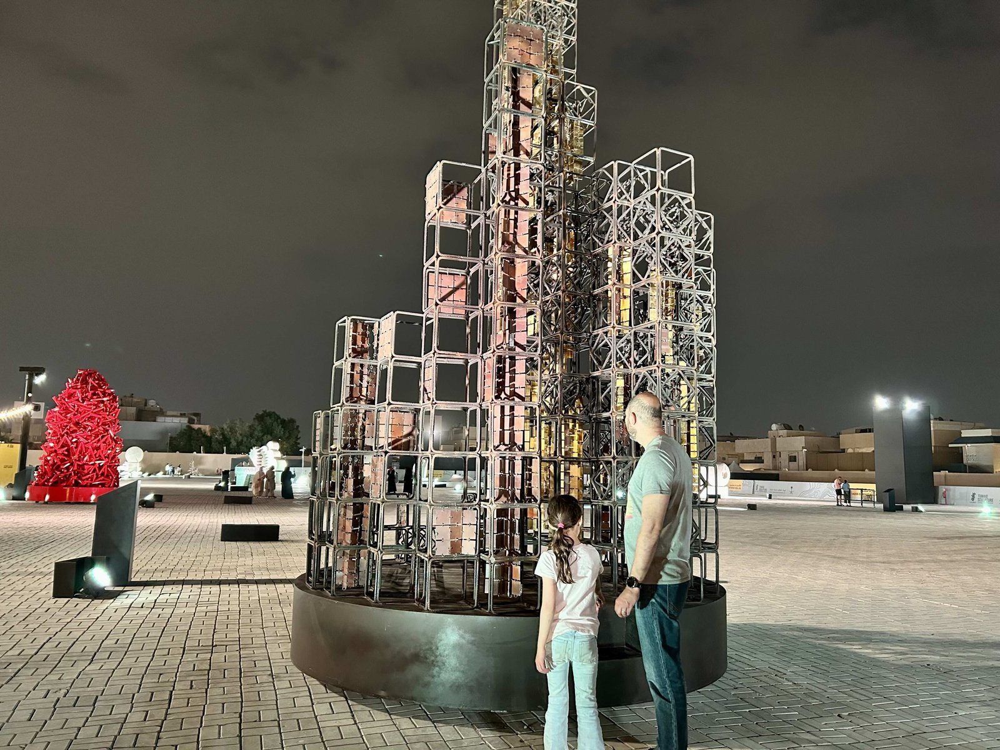
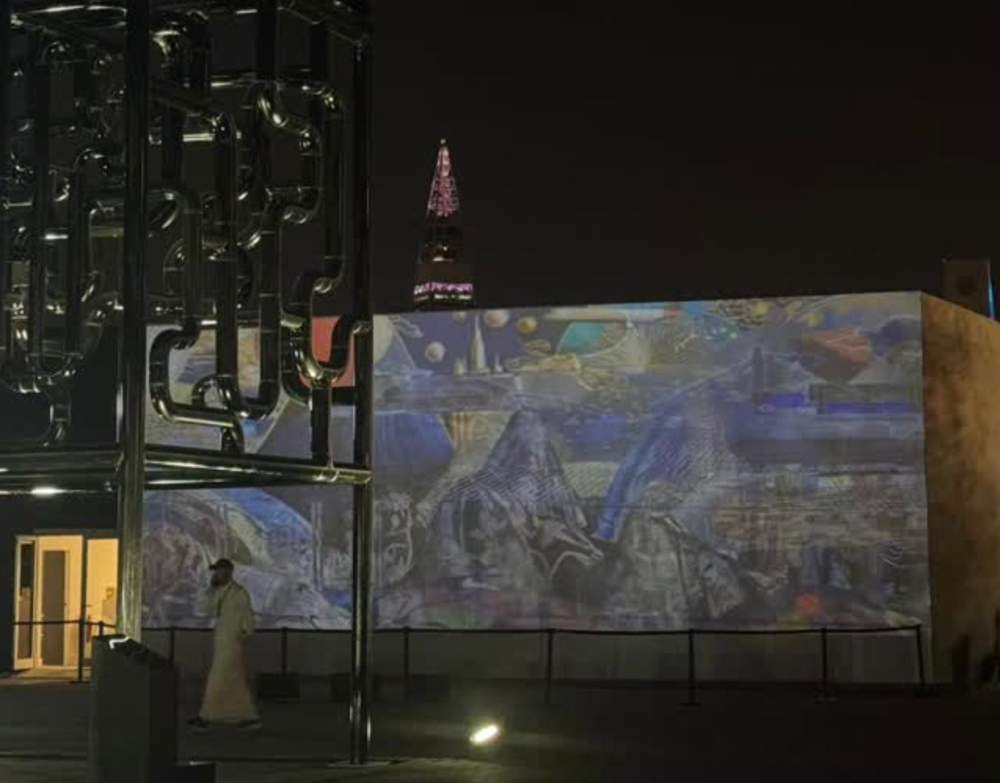

도심 거리에서 펼쳐진 '라이브 조각' 전시
리야드 도심에서는 국제 조각 행사 〈투와이크 조각 심포지엄(Tuwaiq Sculpture Symposium) 2026〉이 열렸다. 올해로 7회를 맞은 이번 행사는 도시 공간을 야외 미술관처럼 활용하는 공공미술 프로젝트로, 리야드의 대표 거리인 프린스 모하메드 빈 압둘아지즈 스트리트(Prince Mohammed bin Abdulaziz Street, 일명 Tahlia Street)에서 진행됐다.

▲ '투와이크 조각 심포지엄(Tuwaiq Sculpture Symposium)' 야외전시장 입구 전경 — 출처: 통신원 촬영
이번 행사에는 18개국에서 참여한 25명의 작가가 다양한 조각 작품을 선보였다. 작가들이 현장에서 직접 작품을 제작하는 '라이브 조각(live sculpting)' 방식으로 진행돼 관람객들이 조각이 완성되는 과정을 가까이에서 지켜볼 수 있었다. 이러한 방식은 작가와 관람객 사이의 거리를 좁히고 예술을 도시의 일상 속으로 끌어들이는 공공미술의 새로운 형태로 평가된다.

▲ 야외 전시장에서 작업 중인 작가들 — 출처: 통신원 촬영
심포지엄은 1월 12일부터 2월 5일까지 진행됐다. 전시는 1월 9일부터 2월 22일까지 열릴 예정이었으나 관람객들의 호응으로 2월 28일까지 연장됐다. 행사 기간 동안 퍼블릭 워크숍, 패널 토크, 마스터클래스 등 다양한 프로그램도 함께 열렸으며 전시 입장과 워크숍 참가비는 무료로 운영됐다.
사우디 역사와 도시 이야기를 담은 조각들
올해 행사는 '다가올 변화의 흔적들(Traces of What Will Be)'을 주제로 진행됐다. 전시는 도시의 역사와 변화, 그리고 미래를 예술적으로 탐구하는 작품들을 소개했다. 전시가 열린 타흘리아 스트리트(Tahlia Street)는 리야드의 대표적인 상업·문화 거리로 도시의 사회적 변화와 발전을 상징하는 공간으로 알려져 있다. 이러한 장소적 맥락은 작품들이 도시 환경과 상호작용하며 새로운 의미를 만들어내는 배경이 됐다.

▲ 완성 전 야외 전시장 풍경 — 출처: 통신원 촬영
통신원은 행사 초반과 전시 종료 무렵 두 차례 현장을 방문해 작품 제작 과정과 완성된 결과물을 비교해 볼 수 있었다. 도심 거리 한가운데 설치된 대형 조각 작품들은 관람객들이 자유롭게 오가며 감상할 수 있도록 배치돼 있었으며, 예술이 도시의 일상 속에 자연스럽게 스며든 풍경을 확인할 수 있었다. 특히 사우디 특정 지역에서 채굴된 석재를 활용한 작품이나 과거 대형 선박 침몰 사건을 모티프로 한 작품 등 사우디아라비아의 역사적 서사를 담은 조각들이 눈길을 끌었다.


▲ 완성 후 야외 전시장 풍경 — 출처: 통신원 촬영
한국 뉴미디어 아티스트 티안(Tahn) 특별 참여
이번 전시에는 사우디 비주얼 아트 커미션(Visual Arts Commission) 산하 인터믹스 레지던시(Intermix Residency)에 참여하고 있는 한국 작가인 뉴미디어 아티스트 티안(Tahn)도 특별 참여해 데이터 기반 미디어아트 작품을 선보였다. 대부분의 작가들이 석재와 금속을 활용한 물리적인 조각 작업을 선보인 가운데 티안 작가는 빛과 데이터를 활용한 뉴미디어 작업으로 참여한 유일한 미디어아티스트였다. 그는 관람객의 움직임과 다양한 데이터를 작품에 반영하는 방식으로 물질이 아닌 빛과 데이터로 구현되는 '비물질적 조각'을 선보였다.

▲ 야외 전시장에 투사된 티안(Tahn) 작가의 미디어아트 작품 — 출처: 티안 작가 인스타그램(@tahn_artis)
공공미술 정책 '리야드 아트(Riyadh Art)'
투와이크 조각 심포지엄은 리야드 전역에 공공미술 작품을 설치하는 도시 문화 프로젝트 '리야드 아트(Riyadh Art)'의 주요 프로그램 가운데 하나다. 리야드 아트는 2019년 사우디 국왕 살만 빈 압둘아지즈(Salman bin Abdulaziz Al Saud)가 발표한 대형 도시 프로젝트로, 리야드 왕립위원회가 추진하고 있다. 사우디의 국가 발전 전략인 비전 2030(Vision 2030)에 따라 진행되는 이 프로젝트는 도시 곳곳에 공공미술 작품을 설치해 시민들이 일상 속에서 예술을 접할 수 있도록 하는 것을 목표로 한다. 장기적으로는 1,000점 이상의 공공미술 작품을 도시 전역에 설치해 리야드를 '벽 없는 미술관'과 같은 문화 도시로 조성하는 것을 지향한다. 리야드 아트는 국제 조각 행사인 투와이크 조각 심포지엄뿐만 아니라 세계 최대 규모의 빛 예술 축제로 알려진 누르 리야드(Noor Riyadh) 등 다양한 프로그램을 통해 도시 공공미술 프로젝트를 확장하고 있다.
사진출처 및 참고자료
통신원 촬영
리야드 아트(Riyadh Art) 공식 웹사이트, riyadhart.rcrc.gov.sa
리야드 왕립위원회(Royal Commission for Riyadh City) 공식 웹사이트, rcrc.gov.sa
≪프리즈(Frieze)≫ (2026. 02. 20). Sarah Alruwayti on Training the Next Generation of Saudi Sculptors, frieze.com
티안 작가 인스타그램(@tahn_artis), instagram.com